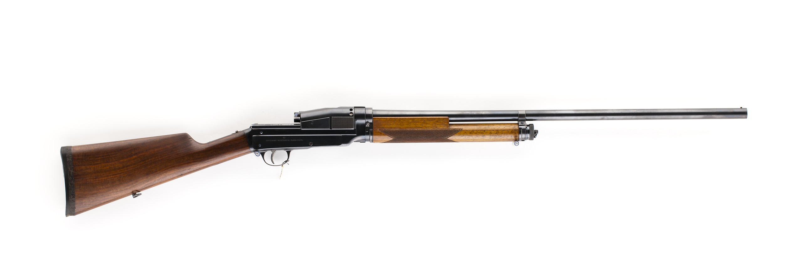

Shotguns had existed for many years before World War 1. They have been a favorite of hunters, highway robbers, and law enforcement since the late 1700's. The military mostly abandoned using them as their limited range made them inferior to ordinary rifles. However, in the late 1800's, John Browning revolutionized the weapon by developing the pump action system that most modern shotguns will use. These designs gave shotguns a new lease on life in WW1. The cramped conditions of trenches in addition to the high rates of fire allowed by the pump action design made shotguns weapons to be feared. They were so effective that the German government tried to have the weapons banned claiming they violated the Hague Convention of 1907 by causing "unessesary suffering". These protests fell mostly on deaf ears.
Used by the Assault class shotguns are by far the most powerful close quarter weapons in Battlefield 1. They do enormous damage at close range and because of the spread of the buckshot they fire perfect aim is not always required. However, damage drops off quickly so avoid long range engagements.
Amongst the shotguns, the Model 10-A Hunter variant is currently the reigning champion as its raw damage is unmatched. The Hunter variant also allows the shotgun to be competitive at long ranges.
The M97 is a shotgun that is specialized for close range. It also has a special feature in that it can be fired continously by holding down the fire button. This makes it extremely good at clearly buildings or tunnels. It has good damange as well, capable of a one shot kill if all pellets land. It stikes a balance between the slow firing Model 10-A and the lower damage semiautomatic shotguns. It comes in three different variants.
The M97 was designed by American weapons designer John Browning, and was the primary shotgun used by the US Army for WW1, WW2, and even Korea and Vietnam. It was unique in that a design quirk allowed to be fired repeatedly by simply pumping the action. This allowed it the be fired extremely quickly, which proved deadly in trench warfare, earning it the nickname "trench sweeper". It caused protests from the German government, although the US mostly ignored them. Skilled trap shooters could even use the M97 to shoot grenades out of the air to protect their allies.
The Model 10-A is shotgun that focuses on pure damage. It does the most damage per shell of any shotgun and can often kill in one shot even to medium range. It also has the highest capacity of any shotgun with 6 shells. However, it is also the slowest firing shotgun in the game so make your shots count. Try to pick off single enemies rather than rushing at multiple enemies. It comes in three variants:
Designed by John Pedersen as a civilian sporting shotgun, it was adopted by the U.S Army to suppement the M97 trench gun that was already in service. It was modified with a bayonet lug as well as a wooden heat shield on the barrel, something not depicted in game. Although it did not see as much military use as the M97, it did see civilian success after the war.
The 12g Automatic is a semi-automatic shotgun that specializes in close range combat. Being semi-automatic, it has an extremely high rate of fire, higher than both the pump action shotguns. It also has extremely controllable recoil, making it very easy to spam fire the 5 shells the shotgun has. However, it doesn't do as much damage as other shotguns, so being able to land each shot is a necessity. It comes in three variants:
The Browning Automatic 5 was designed by famous American gun maker John Browning and was one of the first successful semi-automatic shotgun designs. A favorite of police and sport shooters, it was used by the military in limited numbers from WWI to Vietnam. The Auto 5 would be produced from 1902 all the way up to 2000, a testament to its quality.
Acting as a compromise of the damage of the pump-action shotguns and the rate of fire of the 12g Automatic, the Sjögren Inertial is a semi-automatic shotgun that is best used at short to medium range. It is capable of a one shot kill at close range like the pump action shotguns, and has controllable recoil, making it a flexible weapon. It has no variants to compare.
Designed by Carl Axel Theodor Sjögren in the early 1900's, it used a unique inertia operated system to cycle the action. This system would later be used in modern shotguns like the Benelli M4. Around 5,000 were produced before WW1, and they saw limited use in WWI by all sides. However, they are very rare in the present day, most of the surviving copies probably owned as trophies.